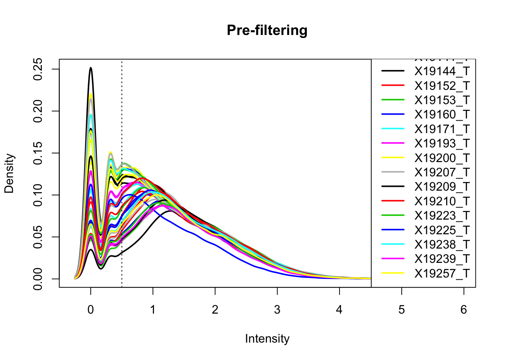
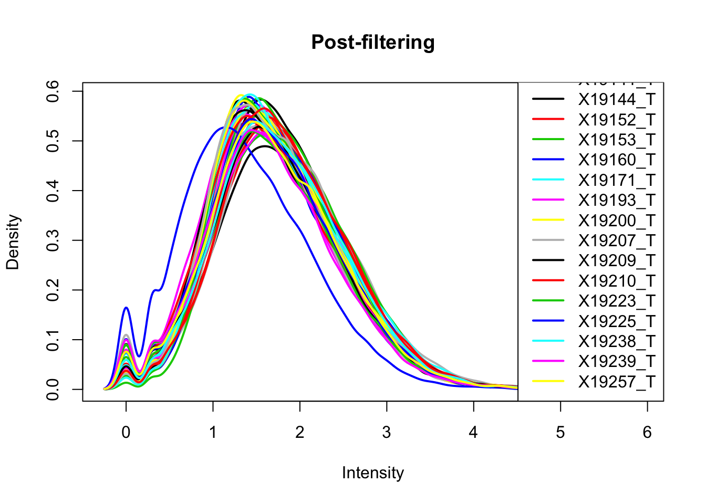
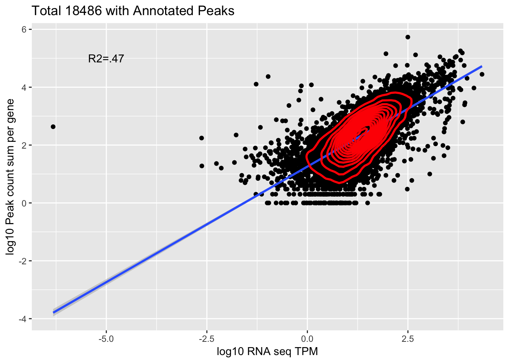

Last updated: 2018-12-21
workflowr checks: (Click a bullet for more information) ✔ R Markdown file: up-to-date
Great! Since the R Markdown file has been committed to the Git repository, you know the exact version of the code that produced these results.
✔ Environment: empty
Great job! The global environment was empty. Objects defined in the global environment can affect the analysis in your R Markdown file in unknown ways. For reproduciblity it’s best to always run the code in an empty environment.
✔ Seed:
set.seed(12345)
The command set.seed(12345) was run prior to running the code in the R Markdown file. Setting a seed ensures that any results that rely on randomness, e.g. subsampling or permutations, are reproducible.
✔ Session information: recorded
Great job! Recording the operating system, R version, and package versions is critical for reproducibility.
✔ Repository version: 490f857
wflow_publish or wflow_git_commit). workflowr only checks the R Markdown file, but you know if there are other scripts or data files that it depends on. Below is the status of the Git repository when the results were generated:
Ignored files:
Ignored: .DS_Store
Ignored: .Rhistory
Ignored: .Rproj.user/
Ignored: data/.DS_Store
Ignored: output/.DS_Store
Untracked files:
Untracked: KalistoAbundance18486.txt
Untracked: analysis/DirectionapaQTL.Rmd
Untracked: analysis/ncbiRefSeq_sm.sort.mRNA.bed
Untracked: analysis/snake.config.notes.Rmd
Untracked: analysis/verifyBAM.Rmd
Untracked: code/PeaksToCoverPerReads.py
Untracked: data/18486.genecov.txt
Untracked: data/APApeaksYL.total.inbrain.bed
Untracked: data/ChromHmmOverlap/
Untracked: data/GM12878.chromHMM.bed
Untracked: data/GM12878.chromHMM.txt
Untracked: data/LianoglouLCL/
Untracked: data/LocusZoom/
Untracked: data/NuclearApaQTLs.txt
Untracked: data/PeakCounts/
Untracked: data/PeaksUsed/
Untracked: data/RNAkalisto/
Untracked: data/TotalApaQTLs.txt
Untracked: data/Totalpeaks_filtered_clean.bed
Untracked: data/UnderstandPeaksQC/
Untracked: data/YL-SP-18486-T-combined-genecov.txt
Untracked: data/YL-SP-18486-T_S9_R1_001-genecov.txt
Untracked: data/apaExamp/
Untracked: data/bedgraph_peaks/
Untracked: data/bin200.5.T.nuccov.bed
Untracked: data/bin200.Anuccov.bed
Untracked: data/bin200.nuccov.bed
Untracked: data/clean_peaks/
Untracked: data/comb_map_stats.csv
Untracked: data/comb_map_stats.xlsx
Untracked: data/comb_map_stats_39ind.csv
Untracked: data/combined_reads_mapped_three_prime_seq.csv
Untracked: data/diff_iso_trans/
Untracked: data/ensemble_to_genename.txt
Untracked: data/example_gene_peakQuant/
Untracked: data/explainProtVar/
Untracked: data/filtered_APApeaks_merged_allchrom_refseqTrans.closest2End.bed
Untracked: data/filtered_APApeaks_merged_allchrom_refseqTrans.closest2End.noties.bed
Untracked: data/first50lines_closest.txt
Untracked: data/gencov.test.csv
Untracked: data/gencov.test.txt
Untracked: data/gencov_zero.test.csv
Untracked: data/gencov_zero.test.txt
Untracked: data/gene_cov/
Untracked: data/joined
Untracked: data/leafcutter/
Untracked: data/merged_combined_YL-SP-threeprimeseq.bg
Untracked: data/mol_overlap/
Untracked: data/mol_pheno/
Untracked: data/nom_QTL/
Untracked: data/nom_QTL_opp/
Untracked: data/nom_QTL_trans/
Untracked: data/nuc6up/
Untracked: data/other_qtls/
Untracked: data/pQTL_otherphen/
Untracked: data/peakPerRefSeqGene/
Untracked: data/perm_QTL/
Untracked: data/perm_QTL_opp/
Untracked: data/perm_QTL_trans/
Untracked: data/perm_QTL_trans_filt/
Untracked: data/reads_mapped_three_prime_seq.csv
Untracked: data/smash.cov.results.bed
Untracked: data/smash.cov.results.csv
Untracked: data/smash.cov.results.txt
Untracked: data/smash_testregion/
Untracked: data/ssFC200.cov.bed
Untracked: data/temp.file1
Untracked: data/temp.file2
Untracked: data/temp.gencov.test.txt
Untracked: data/temp.gencov_zero.test.txt
Untracked: data/threePrimeSeqMetaData.csv
Untracked: output/picard/
Untracked: output/plots/
Untracked: output/qual.fig2.pdf
Unstaged changes:
Modified: analysis/28ind.peak.explore.Rmd
Modified: analysis/InvestigatePeak2GeneAssignment.Rmd
Modified: analysis/apaQTLoverlapGWAS.Rmd
Modified: analysis/cleanupdtseq.internalpriming.Rmd
Modified: analysis/coloc_apaQTLs_protQTLs.Rmd
Modified: analysis/dif.iso.usage.leafcutter.Rmd
Modified: analysis/diff_iso_pipeline.Rmd
Modified: analysis/explainpQTLs.Rmd
Modified: analysis/explore.filters.Rmd
Modified: analysis/flash2mash.Rmd
Modified: analysis/overlapMolQTL.Rmd
Modified: analysis/overlap_qtls.Rmd
Modified: analysis/peakOverlap_oppstrand.Rmd
Modified: analysis/pheno.leaf.comb.Rmd
Modified: analysis/swarmPlots_QTLs.Rmd
Modified: analysis/test.max2.Rmd
Modified: analysis/understandPeaks.Rmd
Modified: code/Snakefile
| File | Version | Author | Date | Message |
|---|---|---|---|---|
| Rmd | 490f857 | Briana Mittleman | 2018-12-21 | add QTL map code |
| html | 8d6e55e | Briana Mittleman | 2018-12-21 | Build site. |
| Rmd | 895acea | Briana Mittleman | 2018-12-21 | add QTL map code |
| html | b49ffd9 | Briana Mittleman | 2018-12-20 | Build site. |
| Rmd | 8925320 | Briana Mittleman | 2018-12-20 | filter annotated clusters |
| html | 785b821 | Briana Mittleman | 2018-12-20 | Build site. |
| Rmd | d99a6f3 | Briana Mittleman | 2018-12-20 | initializa comparison analysis |
The Lianoglou et al paper has data from LCLs as well. I am going to download their high confidence peaks from http://www.polyasite.unibas.ch
“In total, we collected 351,840 Poly(A) sites comprising a total of 4,394,848 reads. We calculated 35.20% of the poly(A) sites, which are 2.68% of all reads, to originate from internal priming.”
library(workflowr)This is workflowr version 1.1.1
Run ?workflowr for help getting startedlibrary(tidyverse)── Attaching packages ────────────────────────────────────────────────────────── tidyverse 1.2.1 ──✔ ggplot2 3.0.0 ✔ purrr 0.2.5
✔ tibble 1.4.2 ✔ dplyr 0.7.6
✔ tidyr 0.8.1 ✔ stringr 1.3.1
✔ readr 1.1.1 ✔ forcats 0.3.0── Conflicts ───────────────────────────────────────────────────────────── tidyverse_conflicts() ──
✖ dplyr::filter() masks stats::filter()
✖ dplyr::lag() masks stats::lag()library(edgeR)Loading required package: limmalibrary(tximport)LianoglouLCL=read.table("../data/LianoglouLCL/SRR1005684.3pSites.highconfidence.ip.bed", stringsAsFactors = F, col.names =c("chr", "start", "end", "Status", "Score", "Strand")) LianoglouLCL %>% group_by(Status) %>% tally()# A tibble: 3 x 2
Status n
<chr> <int>
1 IP 123864
2 OK 227975
3 <NA> 1Filter on the OK peaks.
LianoglouLCL_ok=LianoglouLCL %>% filter(Status=="OK")I can map our reads to these peaks to see what percent of our reads map to these with feature counts. I will need to make this an SAF file.
LianoglouLCLBed2SAF.py
from misc_helper import *
fout = open("/project2/gilad/briana/threeprimeseq/data/LianoglouLCL/SRR1005684.3pSites.highconfidence.ip.OK.SAF",'w')
fout.write("GeneID\tChr\tStart\tEnd\tStrand\n")
for ln in open("/project2/gilad/briana/threeprimeseq/data/LianoglouLCL/SRR1005684.3pSites.highconfidence.ip.OK.bed"):
chrom, start, end, name, score, strand = ln.split()
chrom_F=chrom[3:]
start_i=int(start)
end_i=int(end)
fout.write("%s\t%s\t%d\t%d\t%s\n"%(name, chrom_F, start_i, end_i, strand))
fout.close()Feature Counts
LianoglouLCL_FC.sh
#!/bin/bash
#SBATCH --job-name=LianoglouLCL_FC
#SBATCH --account=pi-yangili1
#SBATCH --time=24:00:00
#SBATCH --output=LianoglouLCL_FC.out
#SBATCH --error=LianoglouLCL_FC.err
#SBATCH --partition=broadwl
#SBATCH --mem=12G
#SBATCH --mail-type=END
module load Anaconda3
source activate three-prime-env
featureCounts -O -a /project2/gilad/briana/threeprimeseq/data/LianoglouLCL/SRR1005684.3pSites.highconfidence.ip.OK.SAF -F SAF -o /project2/gilad/briana/threeprimeseq/data/LianoglouLCL/LianoglouLCL_CleanPeaks.Total.fc /project2/gilad/briana/threeprimeseq/data/sort/*-T-*-sort.bam -s 2
featureCounts -O -a /project2/gilad/briana/threeprimeseq/data/LianoglouLCL/SRR1005684.3pSites.highconfidence.ip.OK.SAF -F SAF -o /project2/gilad/briana/threeprimeseq/data/LianoglouLCL/LianoglouLCL_CleanPeaks.Nuclear.fc /project2/gilad/briana/threeprimeseq/data/sort/*-N-*-sort.bam -s 2
fix_LianoglouLCL_FC.py
infile= open("/project2/gilad/briana/threeprimeseq/data/LianoglouLCL/LianoglouLCL_CleanPeaks.Total.fc.summary", "r")
fout = open("/project2/gilad/briana/threeprimeseq/data/LianoglouLCL/LianoglouLCL_CleanPeaks.Total.fc_fixed.summary",'w')
for line, i in enumerate(infile):
if line == 0:
i_list=i.split()
libraries=[i_list[0]]
for sample in i_list[1:]:
full = sample.split("/")[7]
samp= full.split("-")[2:4]
lim="_"
samp_st=lim.join(samp)
libraries.append(samp_st)
print(libraries)
first_line= "\t".join(libraries)
fout.write(first_line + '\n' )
else:
fout.write(i)
fout.close()Pull summary onto computer and explore percent of reads mapping to peaks.
I can also ask how many of our peaks overlap with theirs.
sed 's/^chr//' /project2/gilad/briana/threeprimeseq/data/LianoglouLCL/SRR1005684.3pSites.highconfidence.ip.OK.bed > /project2/gilad/briana/threeprimeseq/data/LianoglouLCL/SRR1005684.3pSites.highconfidence.ip.OK_noCHR.bed
#sort
sort -k 1,1 -k2,2n /project2/gilad/briana/threeprimeseq/data/LianoglouLCL/SRR1005684.3pSites.highconfidence.ip.OK_noCHR.bed > /project2/gilad/briana/threeprimeseq/data/LianoglouLCL/SRR1005684.3pSites.highconfidence.ip.OK_noCHR_sort.bed
Remake file in python:
inFile=open("/project2/gilad/briana/threeprimeseq/data/LianoglouLCL/SRR1005684.3pSites.highconfidence.ip.OK_noCHR_sort.bed", "r")
outFile=open("/project2/gilad/briana/threeprimeseq/data/LianoglouLCL/SRR1005684.3pSites.highconfidence.ip.OK_noCHR_sort_fixed.bed", "w")
for ln in inFile:
chrom, start, end, stat, score, strand = ln.split()
start_i=int(start)
end_i=int(end)
outFile.write("%s\t%d\t%d\t%s\t%s\t%s\n"%(chrom, start_i, end_i, stat, score, strand))
outFile.close()
import pybedtools
lian=pybedtools.BedTool("/project2/gilad/briana/threeprimeseq/data/LianoglouLCL/SRR1005684.3pSites.highconfidence.ip.OK_noCHR_sort_fixed.bed")
Peak=pybedtools.BedTool("/project2/gilad/briana/threeprimeseq/data/mergedPeaks_comb/filtered_APApeaks_merged_allchrom_refseqTrans.noties_sm.fixed.bed")
lianOverPeak=Peak.intersect(lian, u=True)
#this only results in one overlap:
lianOverPeak.saveas("/project2/gilad/briana/threeprimeseq/data/LianoglouLCL/myPeaksInLiangoluLCL.bed")This results in 39213 peaks.
I will look at our peaks, thier peaks and our tracks in IGV.
Next I can look at the peaks that are called at IP in the Lianglou data.
sed 's/^chr//' /project2/gilad/briana/threeprimeseq/data/LianoglouLCL/SRR1005684.3pSites.highconfidence.ipOnly.bed > /project2/gilad/briana/threeprimeseq/data/LianoglouLCL/SRR1005684.3pSites.highconfidence.ipOnly_noCHR.bed
#sort
sort -k 1,1 -k2,2n /project2/gilad/briana/threeprimeseq/data/LianoglouLCL/SRR1005684.3pSites.highconfidence.ipOnly_noCHR.bed > /project2/gilad/briana/threeprimeseq/data/LianoglouLCL/SRR1005684.3pSites.highconfidence.ipOnly_noCHR_sort.bed
Remake file in python:
inFile=open("/project2/gilad/briana/threeprimeseq/data/LianoglouLCL/SRR1005684.3pSites.highconfidence.ipOnly_noCHR_sort.bed", "r")
outFile=open("/project2/gilad/briana/threeprimeseq/data/LianoglouLCL/SRR1005684.3pSites.highconfidence.ipOnly_noCHR_sort_fixed.bed", "w")
for ln in inFile:
chrom, start, end, stat, score, strand = ln.split()
start_i=int(start)
end_i=int(end)
outFile.write("%s\t%d\t%d\t%s\t%s\t%s\n"%(chrom, start_i, end_i, stat, score, strand))
outFile.close()
import pybedtools
lian=pybedtools.BedTool("/project2/gilad/briana/threeprimeseq/data/LianoglouLCL/SRR1005684.3pSites.highconfidence.ipOnly_noCHR_sort_fixed.bed")
Peak=pybedtools.BedTool("/project2/gilad/briana/threeprimeseq/data/mergedPeaks_comb/filtered_APApeaks_merged_allchrom_refseqTrans.noties_sm.fixed.bed")
lianOverPeak=Peak.intersect(lian, u=True)
#this only results in one overlap:
lianOverPeak.saveas("/project2/gilad/briana/threeprimeseq/data/LianoglouLCL/myPeaksInLiangoluLCL_IPOnly.bed")This results in 35700 peaks.
Our peaks are wider and may incompase the ok and IP peaks. Some of these overlap. I will look at how many.
I can ask how many of the OK peaks in our data are also in the IP list of our peaks
import pybedtools
ip=pybedtools.BedTool("/project2/gilad/briana/threeprimeseq/data/LianoglouLCL/myPeaksInLiangoluLCL_IPOnly.bed")
ok=pybedtools.BedTool("/project2/gilad/briana/threeprimeseq/data/LianoglouLCL/myPeaksInLiangoluLCL.bed")
okoverip=ok.intersect(ip, u=True)
#this only results in one overlap:
okoverip.saveas("/project2/gilad/briana/threeprimeseq/data/LianoglouLCL/myPeaksInLiangoluLCL_OkandIP.bed")This results in 16459 peaks.
One problem is thier peaks are only one base pair and we have peaks tat are 1 bp away, ex chr7:5,528,801-5,528,844.
I can expand thier peaks by 5bp on each side and see how much different the results are. I will do this first for the OK peaks only.
inFile=open("/project2/gilad/briana/threeprimeseq/data/LianoglouLCL/SRR1005684.3pSites.highconfidence.ip.OK_noCHR_sort_fixed.bed", "r")
outFile=open("/project2/gilad/briana/threeprimeseq/data/LianoglouLCL/SRR1005684.3pSites.highconfidence.ip.OK_noCHR_sort_fixed_EXTEND.bed", "w")
for ln in inFile:
chrom, start, end, stat, score, strand = ln.split()
start_i=int(start) - 5
end_i=int(end) + 5
outFile.write("%s\t%d\t%d\t%s\t%s\t%s\n"%(chrom, start_i, end_i, stat, score, strand))
outFile.close()
import pybedtools
lian=pybedtools.BedTool("/project2/gilad/briana/threeprimeseq/data/LianoglouLCL/SRR1005684.3pSites.highconfidence.ip.OK_noCHR_sort_fixed_EXTEND.bed")
Peak=pybedtools.BedTool("/project2/gilad/briana/threeprimeseq/data/mergedPeaks_comb/filtered_APApeaks_merged_allchrom_refseqTrans.noties_sm.fixed.bed")
lianOverPeak=Peak.intersect(lian, u=True)
#this only results in one overlap:
lianOverPeak.saveas("/project2/gilad/briana/threeprimeseq/data/LianoglouLCL/myPeaksInExtendedLiangoluLCL.bed")No we have 227975 of our peaks out of 338141 overlapping. This is 67%
The full atlas has peaks mapped to genes. (http://www.polyasite.unibas.ch) I will use these and map our data to them. I can then run the QC metrics I had done previously as well as the QTL analysis.
The first step will be processing the data into a format like mine with peakIDs including the gene name. Then I will run feature counts and filter the non used peaks.
Information from site about columns
The first column stores the chromosome name.
The second and the third column mark the start and end positions of poly(A) site cluster, respectively.
The fourth column is the unqiue cluster ID composed of the chromosome name, the strand, the representative poly(A) site of the cluster, and a two letter code for the cluster annotation (TE: terminal exon, DS: 1,000 nt downstream of a terminal exon, EX: exonic, IN: intronic, AU: 1,000 nt upstream in anti-sense direction of a transcription start site, AE: anti-sense to an exon, AI: anti-sense to an intron, IG: intergenic).
The fifth column stores the number different 3’ end sequencing protocols that support the particular cluster.
The sixth column stores the strand.
The seventh column stores information about the poly(A) signal(s) per poly(A) site, including the motif, the location with respect to the cleavage site and the genomic coordinate.
I am going to use clusters.bed
I am only going to keep PAS with an annotated gene. This is in column 8.
The goal is a dataset like /project2/gilad/briana/threeprimeseq/data/mergedPeaks_comb/filtered_APApeaks_merged_allchrom_refseqTrans.noties_sm.SAF for feature counts. I need to number the peaks here. To do this I can add a column with a number like I did for my peaks.
First sort the clusters file:
sort -k 1,1 -k2,2n /project2/gilad/briana/threeprimeseq/data/LianoglouLCL/clusters.bed > /project2/gilad/briana/threeprimeseq/data/LianoglouLCL/clusters_sort.bed
x = wc -l /project2/gilad/briana/threeprimeseq/data/LianoglouLCL/clusters_sort.bed
seq 1 392912 > cluster.peak.num.txt
paste /project2/gilad/briana/threeprimeseq/data/LianoglouLCL/clusters_sort.bed cluster.peak.num.txt | column -s $'\t' -t > /project2/gilad/briana/threeprimeseq/data/LianoglouLCL/clusters_sort_named.bed
Python script to make a SAF.
clusterBed2SAF.py
fout = open("/project2/gilad/briana/threeprimeseq/data/LianoglouLCL/clusters_sort_named.SAF",'w')
fout.write("GeneID\tChr\tStart\tEnd\tStrand\n")
for ln in open("/project2/gilad/briana/threeprimeseq/data/LianoglouLCL/clusters_sort_named.bed"):
chrom, start, end, uniq, score, strand, extra, gene, name = ln.split()
if gene==".":
continue
else:
chrom_o=chrom[3:]
name_i=int(name)
start_i=int(start)
end_i=int(end)
ID = "peak%d:%s:%d:%d:%s:%s"%(name_i, chrom_o, start_i, end_i, strand, gene)
fout.write("%s\t%s\t%d\t%d\t%s\n"%(ID, chrom_o, start_i, end_i, strand))
fout.close()I can now use this to run feature counts with my bam files.
AnnotatedClustersFC_TN.sh
#!/bin/bash
#SBATCH --job-name=AnnotatedClustersFC_TN
#SBATCH --account=pi-yangili1
#SBATCH --time=24:00:00
#SBATCH --output=AnnotatedClustersFC_TN.out
#SBATCH --error=AnnotatedClustersFC_TN.err
#SBATCH --partition=broadwl
#SBATCH --mem=12G
#SBATCH --mail-type=END
module load Anaconda3
source activate three-prime-env
featureCounts -O -a /project2/gilad/briana/threeprimeseq/data/LianoglouLCL/clusters_sort_named.SAF -F SAF -o /project2/gilad/briana/threeprimeseq/data/LianoglouLCL_quant/AnnotatedClusters.Total.fc /project2/gilad/briana/threeprimeseq/data/sort/*-T-*-sort.bam -s 2
featureCounts -O -a /project2/gilad/briana/threeprimeseq/data/LianoglouLCL/clusters_sort_named.SAF -F SAF -o /project2/gilad/briana/threeprimeseq/data/LianoglouLCL_quant/AnnotatedClusters.Nuclear.fc /project2/gilad/briana/threeprimeseq/data/sort/*-N-*-sort.bam -s 2
I will next need to fix the headers for the total and nuclear files.
FixHeader_TotalAnnotatedClustersFC.py
infile= open("/project2/gilad/briana/threeprimeseq/data/LianoglouLCL_quant/AnnotatedClusters.Total.fc", "r")
fout = open("/project2/gilad/briana/threeprimeseq/data/LianoglouLCL_quant/AnnotatedClusters.Total.fixed.fc",'w')
for line, i in enumerate(infile):
if line == 1:
i_list=i.split()
libraries=i_list[:6]
for sample in i_list[6:]:
full = sample.split("/")[7]
samp= full.split("-")[2:4]
lim="_"
samp_st=lim.join(samp)
libraries.append(samp_st)
first_line= "\t".join(libraries)
fout.write(first_line + '\n')
else :
fout.write(i)
fout.close()FixHeader_NucelarAnnotatedClustersFC.py
infile= open("/project2/gilad/briana/threeprimeseq/data/LianoglouLCL_quant/AnnotatedClusters.Nuclear.fc", "r")
fout = open("/project2/gilad/briana/threeprimeseq/data/LianoglouLCL_quant/AnnotatedClusters.Nuclear.fixed.fc",'w')
for line, i in enumerate(infile):
if line == 1:
i_list=i.split()
libraries=i_list[:6]
for sample in i_list[6:]:
full = sample.split("/")[7]
samp= full.split("-")[2:4]
lim="_"
samp_st=lim.join(samp)
libraries.append(samp_st)
first_line= "\t".join(libraries)
fout.write(first_line + '\n')
else :
fout.write(i)
fout.close()This results in 7-11 million reads mapping to the features in the total fraction. This is in comparison to over 10 mill in our peaks.
With these results I need to filter the lowley expressed clusters. I will start with one line as I did before.
total_Cov=read.table("../data/LianoglouLCL/AnnotatedClusters.Total.fixed.fc", header=T, stringsAsFactors = F)
peakLength=total_Cov[,6]
total_Cov_m= as.matrix(total_Cov[,7:ncol(total_Cov)])
total_Cov_m=log10(total_Cov_m)Plot the densities
plotDensities(total_Cov_m, legend = "bottomright", main="Pre-filtering")
abline(v = .5, lty = 3)
| Version | Author | Date |
|---|---|---|
| b49ffd9 | Briana Mittleman | 2018-12-20 |
The cuttoff should be log10=.5. I want to filter on this.
keep.exprs_T=rowSums(total_Cov_m>.5) >= 26
total_Cov_m_filt= total_Cov_m[keep.exprs_T,]
plotDensities(total_Cov_m_filt, legend = "bottomright", main="Post-filtering")
| Version | Author | Date |
|---|---|---|
| b49ffd9 | Briana Mittleman | 2018-12-20 |
This looks a lot better and results in 35,197 peaks. Now I can filter the full dataframe and start comparing this to the RNA seq.
total_Cov_18486_filt=total_Cov[keep.exprs_T,1:7] %>% separate(Geneid, into=c("peak", "chr", "start", "end", "strand", "gene"), sep=":") %>% select(gene, X18486_T)%>% group_by(gene) %>% summarize(GeneSum=sum(X18486_T))Pull in the kalisto counts.
TPM counts from Kalisto
tx2gene=read.table("../data/RNAkalisto/ncbiRefSeq.txn2gene.txt" ,header= F, sep="\t", stringsAsFactors = F)
txi.kallisto.tsv <- tximport("../data/RNAkalisto/abundance.tsv", type = "kallisto", tx2gene = tx2gene,countsFromAbundance="lengthScaledTPM" )Note: importing `abundance.h5` is typically faster than `abundance.tsv`reading in files with read_tsv1
removing duplicated transcript rows from tx2gene
transcripts missing from tx2gene: 99
summarizing abundance
summarizing counts
summarizing lengthJoin the data frames.
TXN_abund=as.data.frame(txi.kallisto.tsv$abundance) %>% rownames_to_column(var="gene")
colnames(TXN_abund)=c("gene", "TPM")
Overlap=TXN_abund %>% inner_join(total_Cov_18486_filt,by="gene")Remove rows with 0 counts and Plot:
Overlap=Overlap %>% filter(TPM>0) %>% filter(GeneSum>0)
corr_18486Tot=ggplot(Overlap, aes(x=log10(TPM), y= log10(GeneSum))) + geom_point() + labs(title="Total 18486 with Annotated Peaks", x="log10 RNA seq TPM", y="log10 Peak count sum per gene")+ geom_smooth(aes(x=log10(TPM),y=log10(GeneSum)),method = "lm") + annotate("text",x=-5, y=5,label="R2=.47") +geom_density2d(na.rm = TRUE, size = 1, colour = 'red')
#+ geom_text(aes(label=gene),hjust=0, vjust=0)
corr_18486Tot 
| Version | Author | Date |
|---|---|---|
| b49ffd9 | Briana Mittleman | 2018-12-20 |
summary(lm(log10(TPM)~log10(GeneSum),Overlap))
Call:
lm(formula = log10(TPM) ~ log10(GeneSum), data = Overlap)
Residuals:
Min 1Q Median 3Q Max
-7.8184 -0.2344 0.0135 0.2620 2.5192
Coefficients:
Estimate Std. Error t value Pr(>|t|)
(Intercept) -0.070619 0.015141 -4.664 3.14e-06 ***
log10(GeneSum) 0.594440 0.006294 94.449 < 2e-16 ***
---
Signif. codes: 0 '***' 0.001 '**' 0.01 '*' 0.05 '.' 0.1 ' ' 1
Residual standard error: 0.4692 on 9865 degrees of freedom
Multiple R-squared: 0.4749, Adjusted R-squared: 0.4748
F-statistic: 8921 on 1 and 9865 DF, p-value: < 2.2e-16cor.test(log10(Overlap$TPM),log10(Overlap$GeneSum))
Pearson's product-moment correlation
data: log10(Overlap$TPM) and log10(Overlap$GeneSum)
t = 94.449, df = 9865, p-value < 2.2e-16
alternative hypothesis: true correlation is not equal to 0
95 percent confidence interval:
0.6785988 0.6993264
sample estimates:
cor
0.6891035 This is looking at 9,867 genes.
Look at this sum overed all individuals.
TotCounts_allind=total_Cov[keep.exprs_T,7:45]
SumCounts_Tot=rowSums(TotCounts_allind)
Alllib_Tot_Filt=total_Cov[keep.exprs_T,1:7] %>% separate(Geneid, into=c("peak", "chr", "start", "end", "strand", "gene"), sep=":")
Alllib_Tot_Filt$SumCounts=SumCounts_Tot
Alllib_Tot_Filtbygene=Alllib_Tot_Filt %>% select(gene, SumCounts) %>% group_by(gene) %>% summarize(GeneSum=sum(SumCounts))
TXN_abund_combLibs_tot=TXN_abund %>% inner_join(Alllib_Tot_Filtbygene,by="gene")
TXN_abund_combLibs_tot_n0=TXN_abund_combLibs_tot %>% filter(TPM>0) %>% filter(GeneSum>0)
corr_AllLibTot=ggplot(TXN_abund_combLibs_tot_n0, aes(x=log10(TPM), y= log10(GeneSum))) + geom_point() + labs(title="Total All ind Filtered Annotated Clusters", x="log10 RNA seq TPM", y="log10 Peak count sum per gene All Ind.")+ geom_smooth(aes(x=log10(TPM),y=log10(GeneSum)),method = "lm") + annotate("text",x=-5, y=5,label="R2=.53") +geom_density2d(na.rm = TRUE, size = 1, colour = 'red') + geom_text(aes(label=gene),hjust=0, vjust=0)
corr_AllLibTot | Version | Author | Date |
|---|---|---|
| 8d6e55e | Briana Mittleman | 2018-12-21 |
summary(lm(log10(TPM)~log10(GeneSum),TXN_abund_combLibs_tot_n0))
Call:
lm(formula = log10(TPM) ~ log10(GeneSum), data = TXN_abund_combLibs_tot_n0)
Residuals:
Min 1Q Median 3Q Max
-7.8186 -0.2245 0.0180 0.2594 2.4471
Coefficients:
Estimate Std. Error t value Pr(>|t|)
(Intercept) -1.57143 0.02637 -59.58 <2e-16 ***
log10(GeneSum) 0.70927 0.00654 108.45 <2e-16 ***
---
Signif. codes: 0 '***' 0.001 '**' 0.01 '*' 0.05 '.' 0.1 ' ' 1
Residual standard error: 0.4606 on 10322 degrees of freedom
Multiple R-squared: 0.5326, Adjusted R-squared: 0.5326
F-statistic: 1.176e+04 on 1 and 10322 DF, p-value: < 2.2e-16cor.test(log10(TXN_abund_combLibs_tot_n0$TPM),log10(TXN_abund_combLibs_tot_n0$GeneSum),method="spearman")Warning in cor.test.default(log10(TXN_abund_combLibs_tot_n0$TPM),
log10(TXN_abund_combLibs_tot_n0$GeneSum), : Cannot compute exact p-value
with ties
Spearman's rank correlation rho
data: log10(TXN_abund_combLibs_tot_n0$TPM) and log10(TXN_abund_combLibs_tot_n0$GeneSum)
S = 4.5983e+10, p-value < 2.2e-16
alternative hypothesis: true rho is not equal to 0
sample estimates:
rho
0.7492704 The outlier is PYURF. Let me remove this gene.
TXN_abund_combLibs_tot_n0_noPYRUF= TXN_abund_combLibs_tot_n0 %>% filter(gene !="PYURF")
corr_AllLibTot_noPYRUF=ggplot(TXN_abund_combLibs_tot_n0_noPYRUF, aes(x=log10(TPM), y= log10(GeneSum))) + geom_point() + labs(title="Total All ind Filtered Annotated Clusters", x="log10 RNA seq TPM", y="log10 Peak count sum per gene All Ind.")+ geom_smooth(aes(x=log10(TPM),y=log10(GeneSum)),method = "lm") + annotate("text",x=-5, y=5,label="R2=.54") +geom_density2d(na.rm = TRUE, size = 1, colour = 'red')
#+ geom_text(aes(label=gene),hjust=0, vjust=0)
corr_AllLibTot_noPYRUF | Version | Author | Date |
|---|---|---|
| 8d6e55e | Briana Mittleman | 2018-12-21 |
summary(lm(log10(TPM)~log10(GeneSum),TXN_abund_combLibs_tot_n0_noPYRUF))
Call:
lm(formula = log10(TPM) ~ log10(GeneSum), data = TXN_abund_combLibs_tot_n0_noPYRUF)
Residuals:
Min 1Q Median 3Q Max
-3.5931 -0.2252 0.0172 0.2588 2.4468
Coefficients:
Estimate Std. Error t value Pr(>|t|)
(Intercept) -1.572873 0.026004 -60.48 <2e-16 ***
log10(GeneSum) 0.709829 0.006448 110.08 <2e-16 ***
---
Signif. codes: 0 '***' 0.001 '**' 0.01 '*' 0.05 '.' 0.1 ' ' 1
Residual standard error: 0.4542 on 10321 degrees of freedom
Multiple R-squared: 0.54, Adjusted R-squared: 0.54
F-statistic: 1.212e+04 on 1 and 10321 DF, p-value: < 2.2e-16cor.test(log10(TXN_abund_combLibs_tot_n0_noPYRUF$TPM),log10(TXN_abund_combLibs_tot_n0_noPYRUF$GeneSum),method="spearman")Warning in cor.test.default(log10(TXN_abund_combLibs_tot_n0_noPYRUF$TPM), :
Cannot compute exact p-value with ties
Spearman's rank correlation rho
data: log10(TXN_abund_combLibs_tot_n0_noPYRUF$TPM) and log10(TXN_abund_combLibs_tot_n0_noPYRUF$GeneSum)
S = 4.5925e+10, p-value < 2.2e-16
alternative hypothesis: true rho is not equal to 0
sample estimates:
rho
0.7495161 Now I can create the File ID file I will use to make the phenotype
create_fileid_AnnotatedCluster_total.py
fout = open("/project2/gilad/briana/threeprimeseq/data/LianoglouLCL_quant/file_id_mapping_total_AnnotatedCluster_head.txt",'w')
infile= open("/project2/gilad/briana/threeprimeseq/data/LianoglouLCL_quant/AnnotatedClusters.Total.fixed.fc", "r")
for line, i in enumerate(infile):
if line == 0:
i_list=i.split()
files= i_list[10:-2]
for each in files:
full = each.split("/")[7]
samp= full.split("-")[2:4]
lim="_"
samp_st=lim.join(samp)
outLine= full[:-1] + "\t" + samp_st
fout.write(outLine + "\n")
fout.close()I need to remove the first lines of these files:
awk '{if (NR!=1) {print}}' /project2/gilad/briana/threeprimeseq/data/LianoglouLCL_quant/file_id_mapping_total_AnnotatedCluster_head.txt > /project2/gilad/briana/threeprimeseq/data/LianoglouLCL_quant/file_id_mapping_total_AnnotatedCluster.txt
I want to use the filtered peaks for the QTL analysis so I can write out the FC filtered file.
total_Cov_filt=total_Cov[keep.exprs_T,]
#write.table(total_Cov_filt, file="../data/LianoglouLCL/AnnotatedClusters.Total.fixed.filtered.fc", quote=F, col.names = T, row.names = F)I need to manually remove the X that was added to the header. I then copy this file to the /project2/gilad/briana/threeprimeseq/data/LianoglouLCL_quant/ directory.
I dont have thier gene file. I can have the phenotpye stay the start and end of the peaks for the QTL analysis. This means I will be calling QTLs 1mb around the start of the peak.
makePheno_AnnotatedClusters_Total.py
#PYTHON 3
dic_IND = {}
dic_BAM = {}
for ln in open("/project2/gilad/briana/threeprimeseq/data/LianoglouLCL_quant/file_id_mapping_total_AnnotatedCluster.txt"):
bam, IND = ln.split()
IND = IND.strip()
dic_IND[bam] = IND
if IND not in dic_BAM:
dic_BAM[IND] = []
dic_BAM[IND].append(bam)
#now I have ind dic with keys as the bam and ind as the values
#I also have a bam dic with ind as the keys and bam as the values
inds=list(dic_BAM.keys()) #list of ind libraries
#list of genes
count_file=open("/project2/gilad/briana/threeprimeseq/data/LianoglouLCL_quant/AnnotatedClusters.Total.fixed.filtered.fc", "r")
genes=[]
for line , i in enumerate(count_file):
if line > 1:
i_list=i.split()
id=i_list[0]
id_list=id.split(":")
gene=id_list[5]
if gene not in genes:
genes.append(gene)
#make the ind and gene dic
dic_dub={}
for g in genes:
dic_dub[g]={}
for i in inds:
dic_dub[g][i]=0
#populate the dictionary
count_file=open("/project2/gilad/briana/threeprimeseq/data/LianoglouLCL_quant/AnnotatedClusters.Total.fixed.filtered.fc", "r")
for line, i in enumerate(count_file):
if line > 1:
i_list=i.split()
id=i_list[0]
id_list=id.split(":")
g= id_list[5]
values=list(i_list[6:])
list_list=[]
for ind,val in zip(inds, values):
list_list.append([ind, val])
for num, name in enumerate(list_list):
dic_dub[g][list_list[num][0]] += int(list_list[num][1])
#write the file by acessing the dictionary and putting values in the table ver the value in the dic
fout=open("/project2/gilad/briana/threeprimeseq/data/LianoglouLCL_quant/AnnotatedClusters.Total.fixed.filtered_pheno_Total.txt","w")
peak=["chrom"]
inds_noL=[]
for each in inds:
indsNA= "NA" + each[:-2]
inds_noL.append(indsNA)
fout.write(" ".join(peak + inds_noL) + '\n' )
count_file=open("/project2/gilad/briana/threeprimeseq/data/LianoglouLCL_quant/AnnotatedClusters.Total.fixed.filtered.fc", "r")
for line , i in enumerate(count_file):
if line > 1:
i_list=i.split()
id=i_list[0]
id_list=id.split(":")
gene=id_list[5]
buff=[id]
start=int(id_list[2])
end=int(id_list[3])
buff=[]
buff.append("chr%s:%d:%d:%s_%s_%s"%(id_list[1], start, end, id_list[5], id_list[4], id_list[0]))
for x,y in zip(i_list[6:], inds):
b=int(dic_dub[gene][y])
t=int(x)
buff.append("%d/%d"%(t,b))
fout.write(" ".join(buff)+ '\n')
fout.close()Make a script to run this:
run_makePhen_AnnotatedCluster.sh
#!/bin/bash
#SBATCH --job-name=run_makePhen_AnnotatedCluster
#SBATCH --account=pi-yangili1
#SBATCH --time=24:00:00
#SBATCH --output=run_makePhen_AnnotatedCluster.out
#SBATCH --error=run_makePhen_AnnotatedCluster.err
#SBATCH --partition=broadwl
#SBATCH --mem=12G
#SBATCH --mail-type=END
module load Anaconda3
source activate three-prime-env
python makePheno_AnnotatedClusters_Total.py
Use leafcutter to prepare this for fastQTL
module load samtools
#zip file
gzip /project2/gilad/briana/threeprimeseq/data/c/AnnotatedClusters.Total.fixed.filtered_pheno_Total.txt
module load python
#leafcutter script
python /project2/gilad/briana/threeprimeseq/code/prepare_phenotype_table.py /project2/gilad/briana/threeprimeseq/data/LianoglouLCL_quant/AnnotatedClusters.Total.fixed.filtered_pheno_Total.txt.gz
#source activate three-prime-env
sh /project2/gilad/briana/threeprimeseq/data/LianoglouLCL_quant/AnnotatedClusters.Total.fixed.filtered_pheno_Total.txt.gz_prepare.sh
#keep only 2 PCs
head -n 3 AnnotatedClusters.Total.fixed.filtered_pheno_Total.txt.gz.PCs > /project2/gilad/briana/threeprimeseq/data/LianoglouLCL_quant/AnnotatedClusters.Total.fixed.filtered_pheno_Total.txt.gz.2PCs
Sample list for Fastqtl is /project2/gilad/briana/threeprimeseq/data/phenotypes_filtPeakTranscript/SAMPLE.txt
APAqtl_nominal_annotatedClusters.sh
#!/bin/bash
#SBATCH --job-name=APAqtl_nominal_transcript
#SBATCH --account=pi-yangili1
#SBATCH --time=24:00:00
#SBATCH --output=APAqtl_nominal_transcript.out
#SBATCH --error=APAqtl_nominal_transcript.err
#SBATCH --partition=broadwl
#SBATCH --mem=12G
#SBATCH --mail-type=END
for i in 1 2 3 4 5 6 7 8 9 10 11 12 13 14 15 16 17 18 19 20 21 22
do
/home/brimittleman/software/bin/FastQTL/bin/fastQTL.static --vcf /project2/gilad/briana/YRI_geno_hg19/chr$i.dose.filt.vcf.gz --cov /project2/gilad/briana/threeprimeseq/data/LianoglouLCL_quant/AnnotatedClusters.Total.fixed.filtered_pheno_Total.txt.gz.2PCs --bed /project2/gilad/briana/threeprimeseq/data/LianoglouLCL_quant/AnnotatedClusters.Total.fixed.filtered_pheno_Total.txt.gz.qqnorm_chr$i.gz --out /project2/gilad/briana/threeprimeseq/data/nominal_APAqtl_Annotated/AnnotatedClusters.Total.fixed.filtered_pheno_Total.txt.gz.qqnorm_chr$i.nominal.out --chunk 1 1 --window 5e5 --include-samples /project2/gilad/briana/threeprimeseq/data/phenotypes_filtPeakTranscript/SAMPLE.txt
done
APAqtl_permuted_annotatedClusters.sh
#!/bin/bash
#SBATCH --job-name=APAqtl_permuted_annotatedClusters
#SBATCH --account=pi-yangili1
#SBATCH --time=24:00:00
#SBATCH --output=APAqtl_permuted_annotatedClusters.out
#SBATCH --error=APAqtl_permuted_annotatedClusters.err
#SBATCH --partition=broadwl
#SBATCH --mem=12G
#SBATCH --mail-type=END
for i in 1 2 3 4 5 6 7 8 9 10 11 12 13 14 15 16 17 18 19 20 21 22
do
/home/brimittleman/software/bin/FastQTL/bin/fastQTL.static --permute 1000 --vcf /project2/gilad/briana/YRI_geno_hg19/chr$i.dose.filt.vcf.gz --cov /project2/gilad/briana/threeprimeseq/data/LianoglouLCL_quant/AnnotatedClusters.Total.fixed.filtered_pheno_Total.txt.gz.2PCs --bed /project2/gilad/briana/threeprimeseq/data/LianoglouLCL_quant/AnnotatedClusters.Total.fixed.filtered_pheno_Total.txt.gz.qqnorm_chr$i.gz --out /project2/gilad/briana/threeprimeseq/data/perm_APAqtl_Annotated/AnnotatedClusters.Total.fixed.filtered_pheno_Total.txt.gz.qqnorm_chr$i.perm.out --chunk 1 1 --window 5e5 --include-samples /project2/gilad/briana/threeprimeseq/data/phenotypes_filtPeakTranscript/SAMPLE.txt
sessionInfo()R version 3.5.1 (2018-07-02)
Platform: x86_64-apple-darwin15.6.0 (64-bit)
Running under: macOS 10.14.1
Matrix products: default
BLAS: /Library/Frameworks/R.framework/Versions/3.5/Resources/lib/libRblas.0.dylib
LAPACK: /Library/Frameworks/R.framework/Versions/3.5/Resources/lib/libRlapack.dylib
locale:
[1] en_US.UTF-8/en_US.UTF-8/en_US.UTF-8/C/en_US.UTF-8/en_US.UTF-8
attached base packages:
[1] stats graphics grDevices utils datasets methods base
other attached packages:
[1] bindrcpp_0.2.2 tximport_1.8.0 edgeR_3.22.5 limma_3.36.5
[5] forcats_0.3.0 stringr_1.3.1 dplyr_0.7.6 purrr_0.2.5
[9] readr_1.1.1 tidyr_0.8.1 tibble_1.4.2 ggplot2_3.0.0
[13] tidyverse_1.2.1 workflowr_1.1.1
loaded via a namespace (and not attached):
[1] locfit_1.5-9.1 tidyselect_0.2.4 haven_1.1.2
[4] lattice_0.20-35 colorspace_1.3-2 htmltools_0.3.6
[7] yaml_2.2.0 utf8_1.1.4 rlang_0.2.2
[10] R.oo_1.22.0 pillar_1.3.0 glue_1.3.0
[13] withr_2.1.2 R.utils_2.7.0 modelr_0.1.2
[16] readxl_1.1.0 bindr_0.1.1 plyr_1.8.4
[19] munsell_0.5.0 gtable_0.2.0 cellranger_1.1.0
[22] rvest_0.3.2 R.methodsS3_1.7.1 evaluate_0.11
[25] labeling_0.3 knitr_1.20 fansi_0.4.0
[28] broom_0.5.0 Rcpp_0.12.19 scales_1.0.0
[31] backports_1.1.2 jsonlite_1.5 hms_0.4.2
[34] digest_0.6.17 stringi_1.2.4 grid_3.5.1
[37] rprojroot_1.3-2 cli_1.0.1 tools_3.5.1
[40] magrittr_1.5 lazyeval_0.2.1 crayon_1.3.4
[43] whisker_0.3-2 pkgconfig_2.0.2 MASS_7.3-50
[46] xml2_1.2.0 lubridate_1.7.4 assertthat_0.2.0
[49] rmarkdown_1.10 httr_1.3.1 rstudioapi_0.8
[52] R6_2.3.0 nlme_3.1-137 git2r_0.23.0
[55] compiler_3.5.1
This reproducible R Markdown analysis was created with workflowr 1.1.1